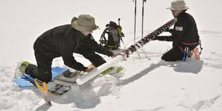
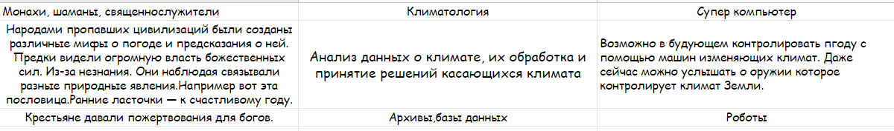

Сейчас я расскажу про образцы льда и их важность.
Группа ученых рассказала об интереснейшем открытии: в Антарктике удалось получить образец льда,
возраст которого по оценкам гляциологов достигает 2,7 млн лет.
Ценность этого льда в том,
что он представляет собой законсервированный образец воды и газов, по которым можно понять,
какие климатические условия были на Земле в ее прошлом. Вмерзшие в лед пузырьки газа помогают ученым определить состав атмосферы,
существовавшей на планете миллионы лет назад.
Именно тогда, около трех миллионов лет назад, случилось нечто,
что способствовало наступлению льдов и общему похолоданию климата.
Специалисты уже успели проанализировать воздух из вмерзших в лед пузырьков.
Как оказалось, содержание углекислого газа 2,7 миллиона лет назад составляло около 300 частей на миллион.

Благодаря роботам которые будут ежедневно добывать образцы льда и отправлять их учёным, люди смогут точно понять когда и при каких условиях происходили климатические катастрофы.Спутники будут следить за обьёмом ледников и записывать это в архивы данных станций.С помощью "Умных буйков" в станциях будет накапливаться информация о температуре воды. Так же буи будут брать и проверять на количество солёной водыю
Этот проект поможет наблюдать за климатическими условиями на Земле и делать выводы
